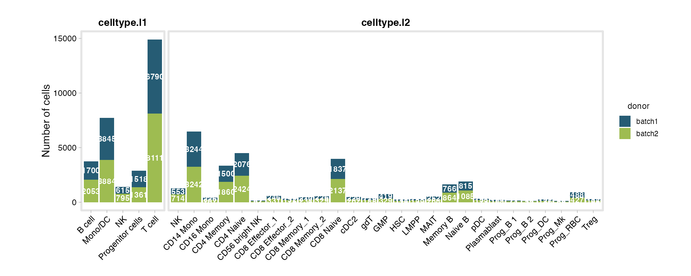
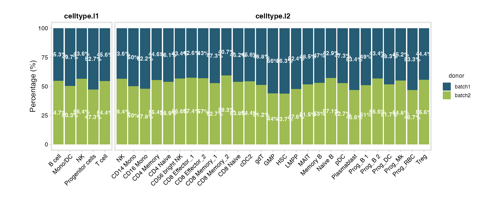
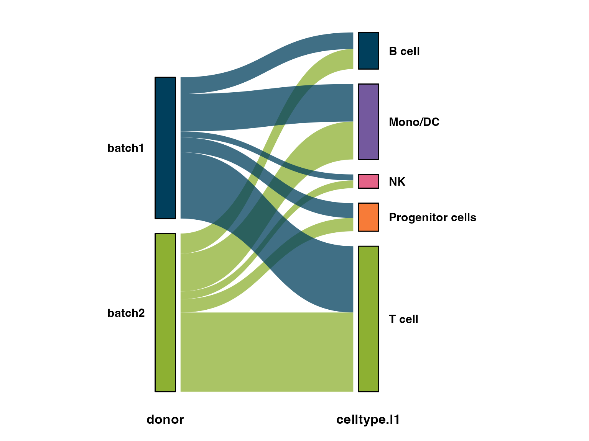
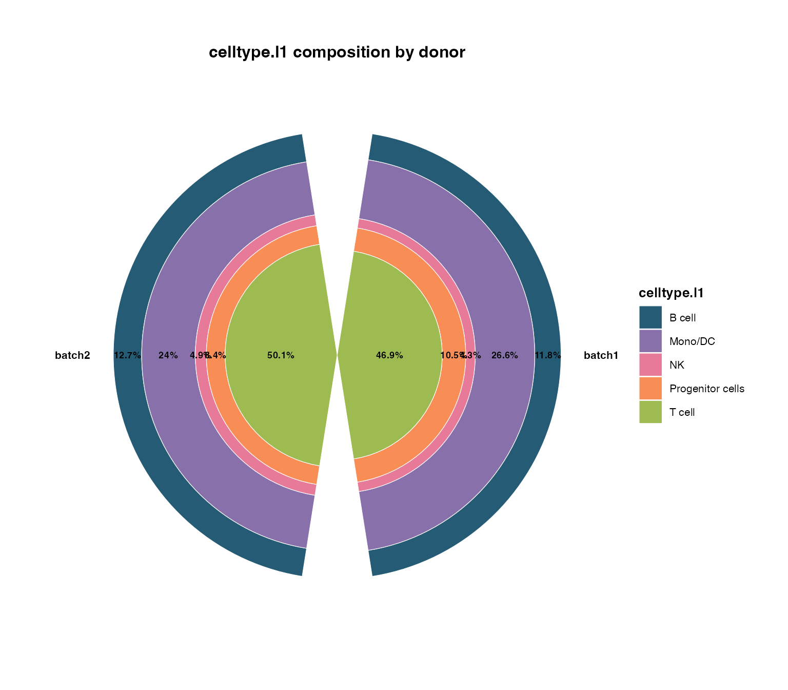
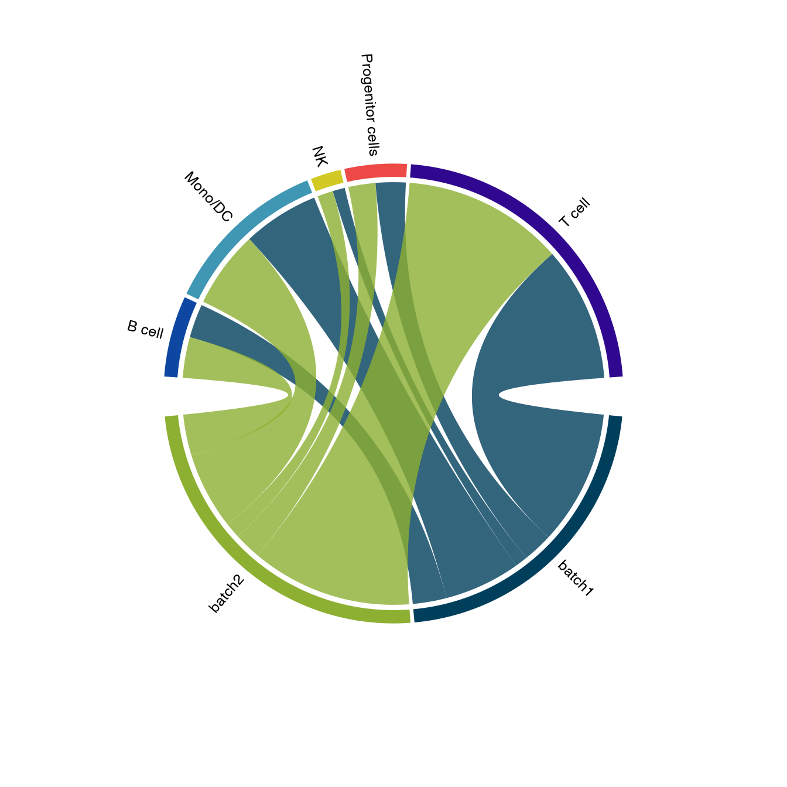

scSidekick - Exploring Metadata & Composition
11_metadata_composition.RmdOverview
Before any fancy analysis, you usually just want to understand
your object: how many cells per sample, how cell-type composition
shifts between conditions, which donors carry which clinical features.
The base-R answer is a pile of nested table() calls and a
few dozen lines of dplyr + ggplot2.
scSidekick turns that into one-liners:
-
SummarizeMetadata()- collapse a giantmeta.datainto a tidy per-group summary table (counts, numeric means, categorical breakdowns). -
PlotMetaSummary()- composition as bar charts (counts and percentages) across one or more grouping levels, in a single call. -
PlotAlluvial(),PlotRose(),PlotChord(),PlotAtlasWheel()- a family of “at a glance” composition graphics for flows, proportions, relationships, and whole-atlas overviews.
library(scSidekick)
library(Seurat)
library(SeuratData)
library(ggforce) # PlotAlluvial uses ggforce's parallel-sets statsWe use bmcite, a bone-marrow CITE-seq dataset (~30 k
cells) with rich metadata: lane, donor,
celltype.l1, and celltype.l2.
1. SummarizeMetadata() - one tidy table from messy
metadata
Point SummarizeMetadata() at one or more ID
columns and it returns one row per ID combination with: an
n_cells count, the mean of every numeric column, and a
compact breakdown of every categorical column - all the columns you
didn’t name are summarised automatically.
donor_summary <- SummarizeMetadata(bmcite, id_columns = "donor")
donor_summary[, 1:5] # first few summary columns## # A tibble: 2 × 5
## donor n_cells nCount_RNA nFeature_RNA nCount_ADT
## <fct> <int> <dbl> <dbl> <dbl>
## 1 batch1 14468 2779. 858. 4588.
## 2 batch2 16204 3116. 912. 4617.Numeric columns are aggregated with numeric_func
(default mean; pass median, max,
a custom function, …). Use several ID columns to summarise at a finer
grain:
ds <- SummarizeMetadata(bmcite,
id_columns = c("donor", "celltype.l1"),
numeric_func = median)
head(ds[, c("donor", "celltype.l1", "n_cells", "nFeature_RNA")])## # A tibble: 6 × 4
## donor celltype.l1 n_cells nFeature_RNA
## <fct> <fct> <int> <dbl>
## 1 batch1 B cell 1700 668
## 2 batch1 Mono/DC 3845 838
## 3 batch1 NK 615 715
## 4 batch1 Progenitor cells 1518 1394.
## 5 batch1 T cell 6790 701
## 6 batch2 B cell 2053 710This is the everyday “what’s actually in my object?” answer - and it scales: on a multi-million-cell atlas you can collapse to one row per donor in seconds.
2. PlotMetaSummary() - composition at a glance
The most common request - how does cell-type composition differ
between samples? - is one call. variables is what
you’re counting, fill_variable colours the stack, and
count_unit = "cells" counts cells (vs donors).
PlotMetaSummary(bmcite,
variables = c("celltype.l1", "celltype.l2"),
fill_variable = "donor",
count_unit = "cells")
Add percent = TRUE for normalised composition - ideal
when group sizes differ:
PlotMetaSummary(bmcite,
variables = c("celltype.l1", "celltype.l2"),
fill_variable = "donor",
count_unit = "cells",
percent = TRUE)
Donor-level summaries with id_column
For clinical datasets you usually want per-donor
counts, not per-cell. Setting id_column collapses cells to
donors first, then lays out the variables - and
row_variable facets into rows. This is exactly how you’d
summarise a large patient cohort (e.g. Braak / APOE / CERAD by sex):
# Illustrative - for a clinical atlas `md` with one row per cell:
PlotMetaSummary(md,
id_column = "Donor.ID",
variables = c("Braak", "APOE.Genotype", "CERAD.score"),
fill_variable = "Cognitive.Status",
row_variable = "Sex")The same function call handles a 30 k-cell demo and a 1.8 M-cell, 150-column clinical atlas - it just collapses to the unit you ask for.
3. Composition chart family
Bar charts aren’t always the clearest view. scSidekick ships four complementary “at a glance” graphics.
PlotAlluvial() - flows across categories
Alluvial plots show how cells flow between two or more categorical axes - great for “which donors contribute to which cell types”.
PlotAlluvial(md,
axes = c("donor", "celltype.l1"))
PlotRose() - circular composition
A polar/“rose” chart of composition per group - a compact alternative to stacked bars.
PlotRose(md,
stat.by = "celltype.l1",
group.by = "donor")
PlotChord() - relationships between two variables
Chord diagrams emphasise the pairing between two
categoricals (here, which cell types appear in which donors).
PlotChord() uses circlize under the
hood.
PlotChord(md,
var1 = "donor",
var2 = "celltype.l1")
PlotAtlasWheel() - whole-dataset overview
For multi-study atlases, PlotAtlasWheel() draws a single
“cover figure” summarising cells per group across studies and patients -
counts in the centre, a wheel of wedges around it. (Shown as a template;
it needs study/patient columns that bmcite doesn’t
carry.)
PlotAtlasWheel(meta,
group.by = "CellType",
study_by = "Study",
patient_by = "Patient.ID",
title = "My Atlas",
cell_label = "Cells")See also
- Vignette 01:
PrepObject()- register the colours these charts reuse - Vignette 03:
PlotComposition()/PlotTrendLabeled()- composition trends on the UMAP - Vignette 12: large-data workflows (BPCells / sketch / pseudobulk) for summarising massive objects
Session info
## R version 4.3.1 (2023-06-16)
## Platform: aarch64-apple-darwin20 (64-bit)
## Running under: macOS 15.6
##
## Matrix products: default
## BLAS: /Library/Frameworks/R.framework/Versions/4.3-arm64/Resources/lib/libRblas.0.dylib
## LAPACK: /Library/Frameworks/R.framework/Versions/4.3-arm64/Resources/lib/libRlapack.dylib; LAPACK version 3.11.0
##
## locale:
## [1] en_US.UTF-8/en_US.UTF-8/en_US.UTF-8/C/en_US.UTF-8/en_US.UTF-8
##
## time zone: America/Chicago
## tzcode source: internal
##
## attached base packages:
## [1] stats graphics grDevices utils datasets methods base
##
## other attached packages:
## [1] ggforce_0.4.2 ggplot2_3.5.2
## [3] stxBrain.SeuratData_0.1.2 pbmc3k.SeuratData_3.1.4
## [5] ifnb.SeuratData_3.1.0 bmcite.SeuratData_0.3.0
## [7] SeuratData_0.2.2 Seurat_5.2.1
## [9] SeuratObject_5.1.0 sp_2.1-3
## [11] scSidekick_0.1.0
##
## loaded via a namespace (and not attached):
## [1] RColorBrewer_1.1-3 shape_1.4.6.1 rstudioapi_0.16.0
## [4] jsonlite_2.0.0 magrittr_2.0.3 spatstat.utils_3.1-0
## [7] farver_2.1.2 rmarkdown_2.29 GlobalOptions_0.1.2
## [10] fs_1.6.6 ragg_1.4.0 vctrs_0.6.5
## [13] ROCR_1.0-11 spatstat.explore_3.2-7 htmltools_0.5.8.1
## [16] sass_0.4.10 sctransform_0.4.1 parallelly_1.37.1
## [19] KernSmooth_2.23-22 bslib_0.9.0 htmlwidgets_1.6.4
## [22] desc_1.4.3 ica_1.0-3 plyr_1.8.9
## [25] plotly_4.10.4 zoo_1.8-14 cachem_1.1.0
## [28] igraph_2.0.3 mime_0.13 lifecycle_1.0.4
## [31] pkgconfig_2.0.3 Matrix_1.6-5 R6_2.6.1
## [34] fastmap_1.2.0 fitdistrplus_1.1-11 future_1.33.2
## [37] shiny_1.11.1 digest_0.6.37 colorspace_2.1-1
## [40] patchwork_1.3.1 tensor_1.5 RSpectra_0.16-1
## [43] irlba_2.3.5.1 textshaping_0.3.7 labeling_0.4.3
## [46] progressr_0.14.0 spatstat.sparse_3.0-3 httr_1.4.7
## [49] polyclip_1.10-6 abind_1.4-8 compiler_4.3.1
## [52] withr_3.0.2 fastDummies_1.7.3 highr_0.10
## [55] MASS_7.3-60.0.1 rappdirs_0.3.3 tools_4.3.1
## [58] lmtest_0.9-40 otel_0.2.0 httpuv_1.6.16
## [61] future.apply_1.11.2 goftest_1.2-3 glue_1.8.0
## [64] nlme_3.1-164 promises_1.5.0 grid_4.3.1
## [67] Rtsne_0.17 cluster_2.1.6 reshape2_1.4.4
## [70] generics_0.1.4 gtable_0.3.6 spatstat.data_3.0-4
## [73] tidyr_1.3.1 data.table_1.15.4 utf8_1.2.6
## [76] spatstat.geom_3.2-9 RcppAnnoy_0.0.22 ggrepel_0.9.6
## [79] RANN_2.6.1 pillar_1.11.0 stringr_1.5.1
## [82] spam_2.10-0 RcppHNSW_0.6.0 later_1.4.2
## [85] circlize_0.4.16 splines_4.3.1 tweenr_2.0.3
## [88] dplyr_1.1.4 lattice_0.22-6 survival_3.5-8
## [91] deldir_2.0-4 tidyselect_1.2.1 miniUI_0.1.1.1
## [94] pbapply_1.7-2 knitr_1.45 gridExtra_2.3
## [97] scattermore_1.2 xfun_0.52 matrixStats_1.2.0
## [100] stringi_1.8.7 lazyeval_0.2.2 yaml_2.3.10
## [103] evaluate_0.23 codetools_0.2-20 tibble_3.3.0
## [106] cli_3.6.5 uwot_0.1.16 xtable_1.8-4
## [109] reticulate_1.35.0 systemfonts_1.0.6 jquerylib_0.1.4
## [112] dichromat_2.0-0.1 Rcpp_1.1.0 globals_0.16.3
## [115] spatstat.random_3.2-3 png_0.1-8 parallel_4.3.1
## [118] pkgdown_2.1.3 dotCall64_1.1-1 listenv_0.9.1
## [121] viridisLite_0.4.2 scales_1.4.0 ggridges_0.5.6
## [124] purrr_1.0.4 crayon_1.5.2 rlang_1.1.6
## [127] cowplot_1.2.0.9000